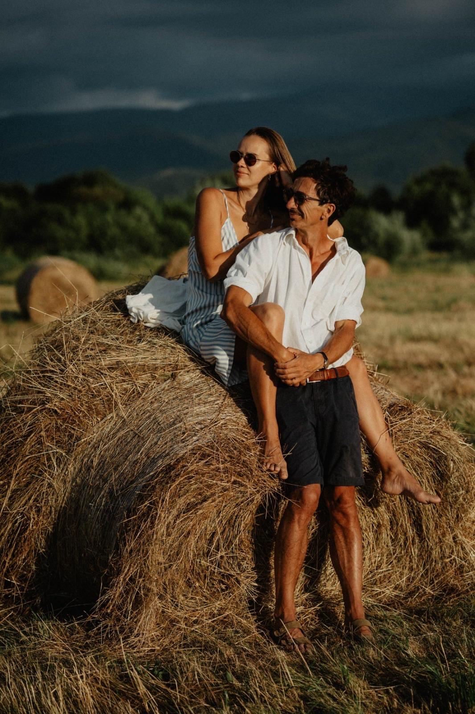
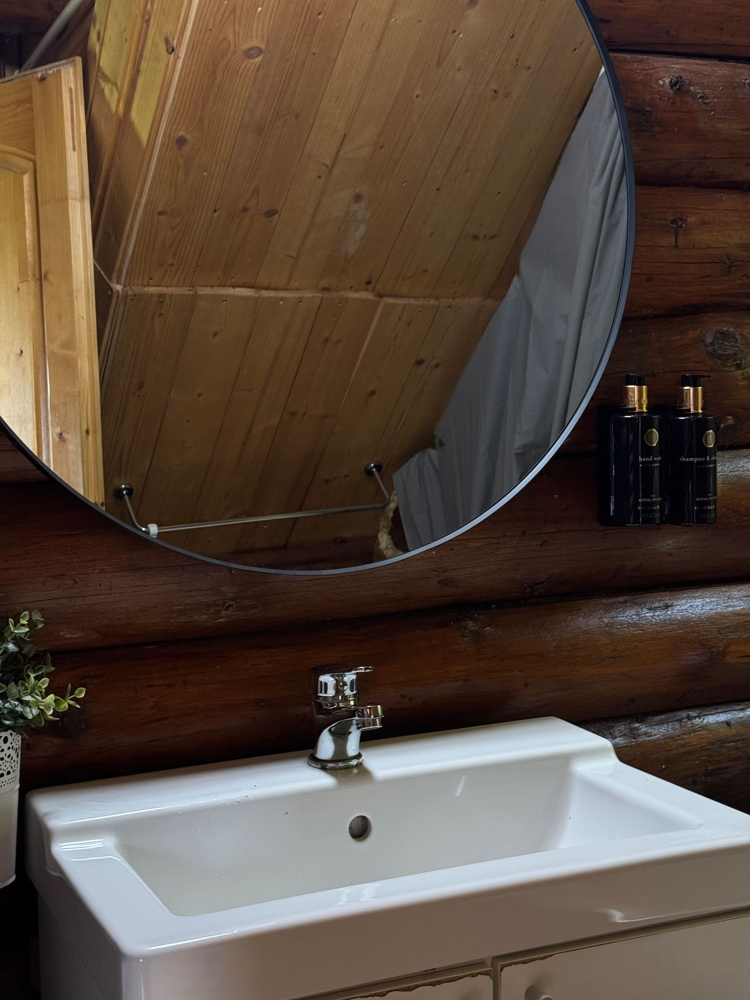
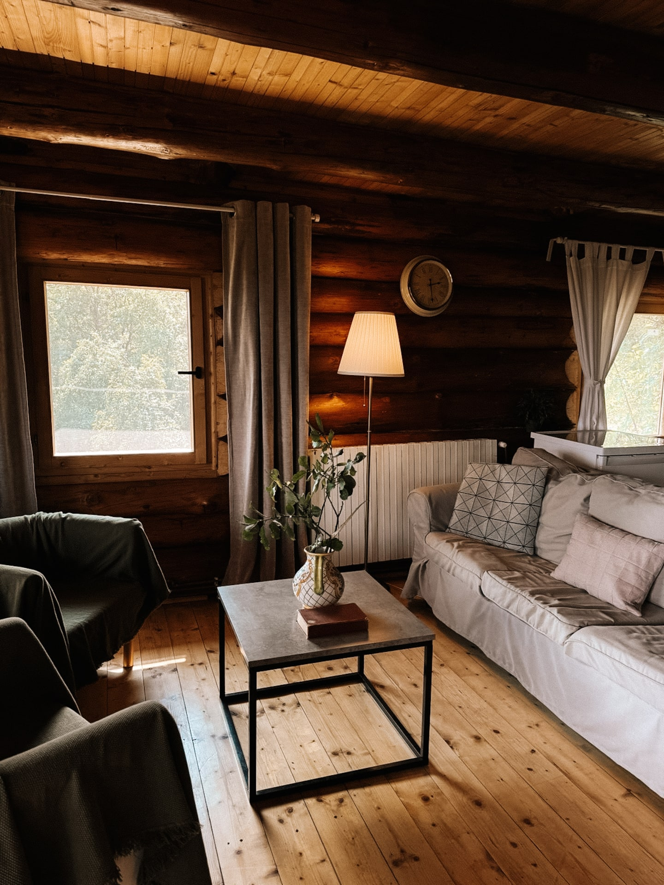
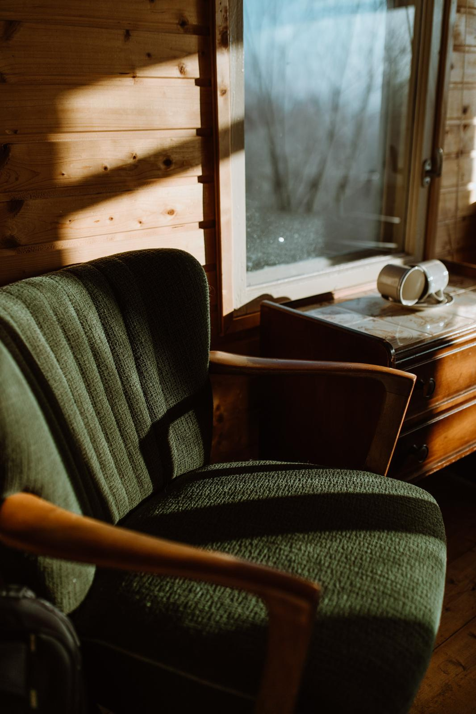
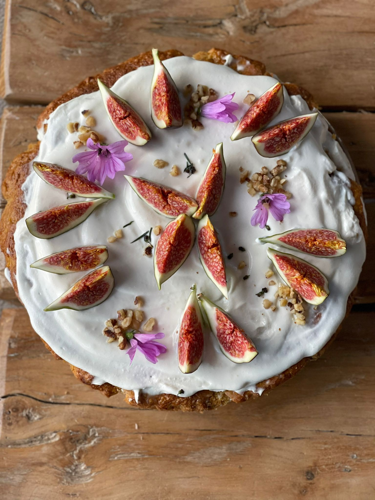
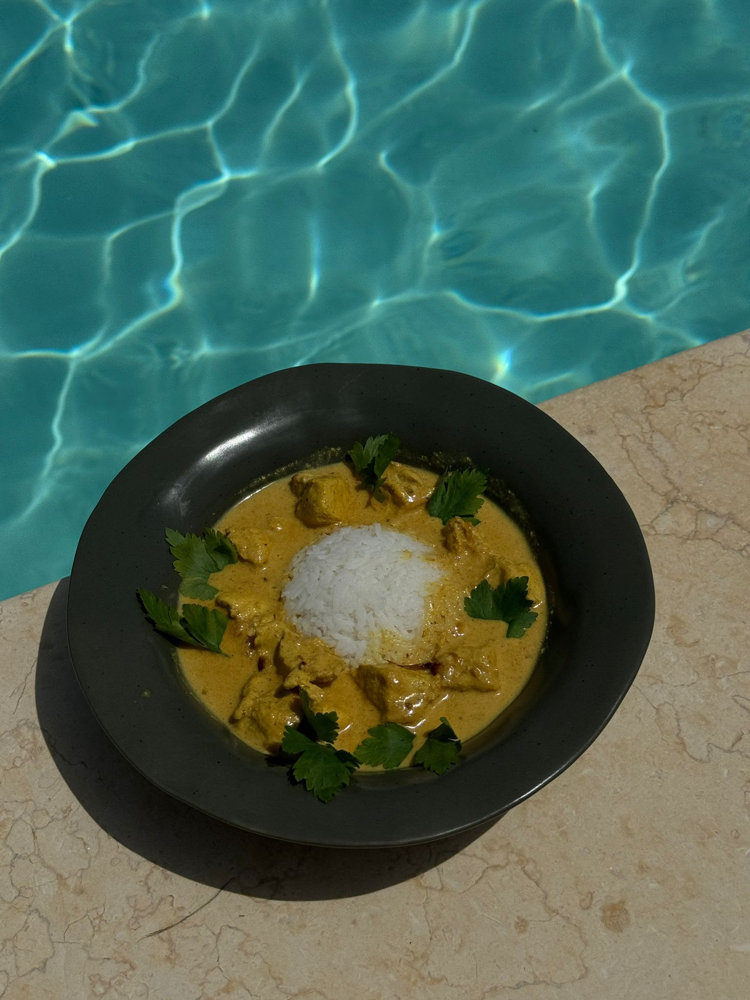
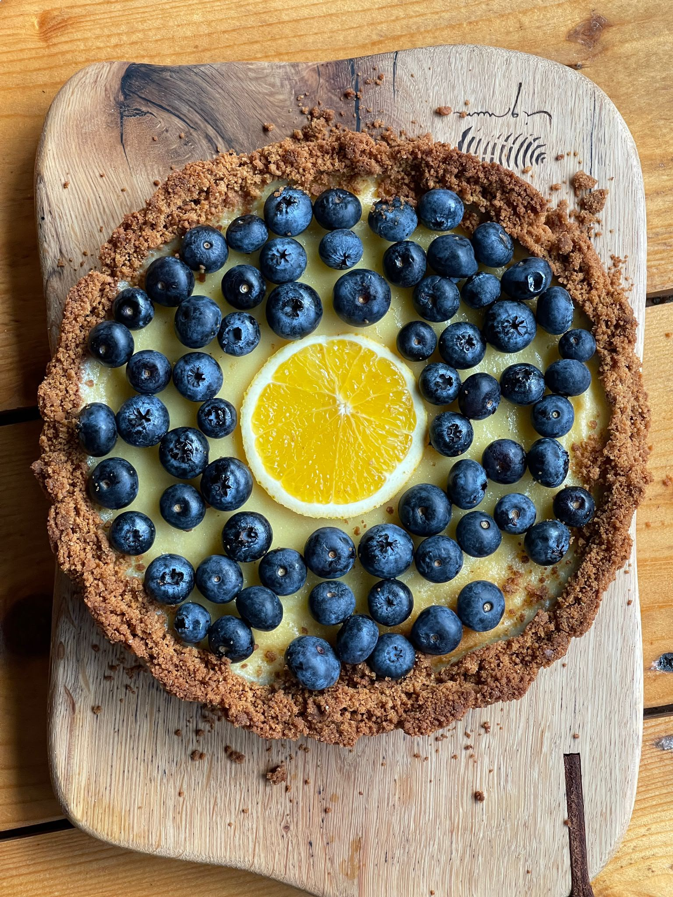
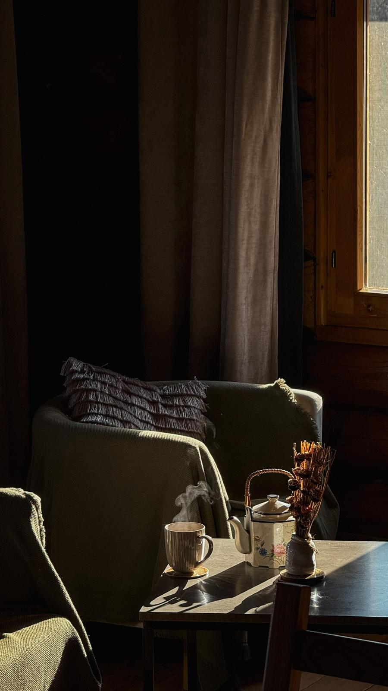
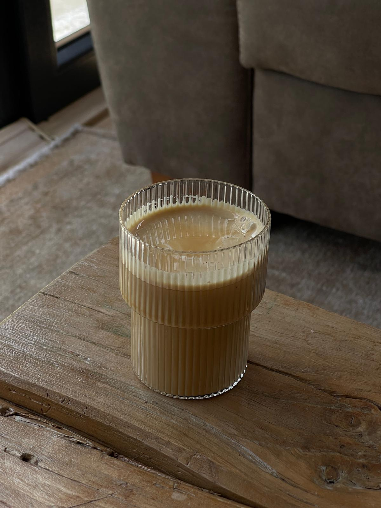
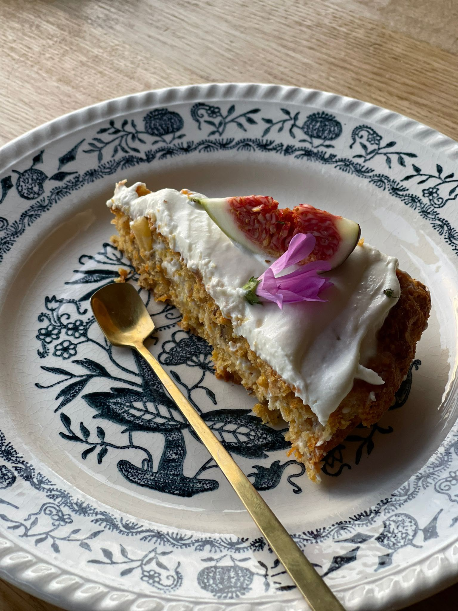

“I don’t like the appearance of luxury. I think luxury is in space and in a lifestyle, but not having a gold object in front of your house.”

Our story
Two people, one hillside.
Rares and Gabie built this place by hand, and they've hosted it themselves for years — more than 1,600 stays, and Superhost season after season. They've never handed it off; looking after people is the part they love most.
If you want to be left alone, you will be. And if you'd like more — a fire lit, dinner cooked by Gabie, a route into the mountains from Rares — just ask. They're always a message away.
Rares
He keeps the old ways alive.
Rares has deep roots in this region, and an instinct to keep its old ways alive. He restores rather than replaces — preserving, repurposing, reinventing what is already there instead of giving up on it. Nothing made by hand, in the old manner, is written off; it is mended, renovated, brought back better. That respect for old things is in the bones of the estate.




Gabie
The details are hers.
Gabie cooks the way she designs: simple ingredients combined with a care that turns them into something you didn't expect — healthy, generous, with desserts that are quietly unbelievable. Her eye is in every cabin too: the light, the textures, the way a space holds you the moment you step inside. That feeling is hers.







Together
Two crafts, one home.
His craft and hers are two sides of the same care — his for what lasts, hers for how it feels. It isn’t something you tour; it’s something you sense the moment you arrive: old wood kept rather than replaced, a room that was clearly cared for. That quiet completeness is the thing the two of them make together.
Featured in